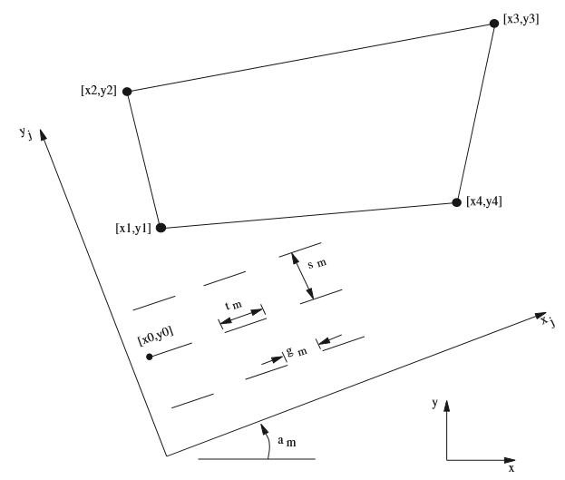

block cut command
Syntax
- block cut keyword <range>
Primary keywords:
arc crack cutting dfn geometry join jointset-id joint-set split table tunnel voronoi
Cut blocks.
Note
Block cutting commands must be issued before blocks are made deformable.
If no range is given, the entire model is used for generation. In most cases, the range is defined by
range joint-region n, where n refers to the id in a previousblock joint-regioncommand. Other range keywords (e.g., mat n) may also be used to restrict the blocks to be cut. Joint segments that do not cut blocks are stored to be used in conjunction with succeedingblock cutcommands. The area of block cutting is controlled by the range keywords. The area of storage is not affected by the range keywords. Only totally unsuccessful joint segments are stored. The remainder ends of joint segments that do not cut blocks are not stored. The stored joint segments can be removed by theblock joint-deletecommand. All incomplete joint segments are discarded automatically before zone generation or cycling. Partial cracks are not modeled in UDEC (only completed blocks). A block that wraps completely around another block will not behave correctly. This is because a block cannot form contacts with itself.The
block contact changecommand can be used to assign material properties and constitutive models to the contacts along the crack.The optional Jointset-ID number is used to specify the jointset ID for any contacts created by use of this command. If no ID is specified, a sequential number is used.
If the optional join keyword is used, any new contacts formed because of the crack will be joined contacts. Contacts that have been joined will be listed as having a constitutive model of 10.
- arc fxc fyc fxb fyb ftheta i
Create an arc pattern of cracks. i cracks are created, which conform to an arc of a circle centered at (fxc, fyc), with a beginning point of (fxb, fyb) and a counterclockwise angle of ftheta degrees.
- crack fx1 fy1 fx2 fy2
Create a crack. A crack is created between points (fx1, fy1) and (fx2, fy2). This command can be used to create a discontinuous fracture in part of a block. Two cracks will be connected if their endpoint locations are within a distance of twice the corner-round-length from each other. All discontinuous cracks that do not link to form blocks are deleted when the
block zone generateorblock cyclecommand is executed.
- cutting b
Allow cutting of blocks created via the
block fillcommand to occur after cycling. Default is off.
- dfn i
need text here
- geometry s
need text here
- join
If the optional join keyword is used, any new contacts formed because of the crack will be joined contacts. Contacts that have been joined will be listed as having a constitutive model of 10.
- jointset-id i
The optional jointset id number is used to specify a specifiic id to be assigned by the cut commands and will be applied to any contacts created by use of these commands. If no jointset id is specified, a sequential number is used.
- joint-set keyword <range>
Generate a joint set in the
rangewith characteristics defined by the following keywords (see Figure 1 for illustration of parameters).- angle-deviation f
Set local deviation of angle of all joints (the deviation is around the center of the segment) from the direction given for the global joint track, \(a\)m.
- angle f <keyword>
Set the angle of joint track (\(a\)m) to the global \(x\)-axis (default = 0). The orientation of joints may also be specified using dip, dd, and location.
- brick <keyword>
Creates a brick like joint pattern. Keywords are:
- angle f
Set the angle of brick base to the global \(x\)-axis (default = 0).
- height f
height of the bricks
- dd f
specifies the dip direction of the joint set in 3D space. This can be used in conjunction with dip and location to generate joint trace intersection with the plane of the model in UDEC. The global orientation of the UDEC plane must have previously been defined using the
model orientation dip-directionandmodel orientation origincommands.
- dip f
specifies the dip of the joint set in 3D space. This can be used in conjunction with dd and location to generate joint trace intersection with the plane of the model in UDEC. The global orientation of the UDEC plane must have previously been defined using the
model orientation dip-directionandmodel orientation origincommands.
- gap f <keyword>
Set the gap length (\(g\)m) between joint segments (default = 0).
- location fx fy fz
specifies a point on a plane in 3D space. This can be used in conjunction with dip and dd to generate joint trace intersection with the plane of the model in UDEC. The global orientation of the UDEC plane must have previously been defined using the
model orientation dip-directionandmodel orientation origincommands.
- origin fx fy
Sets the coordinates (global axis) of the start of one joint trace. A joint will be generated starting at (fx, fy); additional joints will be generated to fill the specified range. (fx, fy) does not have to be inside of a specified range.
- trace f <keyword>
Set the trace length (\(t\)m) of joint segment (default = model size).
- spacing f <keyword>
Set spacing (\(s\)m) normal to joint tracks (default = model size).
Figure 1: Joint set parameters (joint region is defined by JREGION id 1 x1,y1 x2,y2 x3,y3 x4,y4)
- split fx1 fy1 fx2 fy2
Cut blocks along a line from fx1, fy1 to fx2, fy2. It is similar to the crack command, except that blocks must be entirely cut by the line. Partial cuts are not retained for future possible intersections as in the case of the crack command.
- table i
Create a crack from a table. The coordinates in table i are used to generate a continuous crack. The data in the table must be previously defined (see the trick table commands).
- tunnel fx fy frad i
Create a circular joint or crack pattern. fx, fy is the center of the circle, frad is the radius and i is the number of segments or sides defining the circle. Following execution of this command, future cracks or joints will not penetrate the tunnel periphery. To allow cracks to penetrate the periphery, specify a second tunnel with zero radius at some point outside the problem domain.
- voronoi keyword
Voronoi tesselation is used to create randomly sized polygonal blocks. One or more blocks in a UDEC model can be subdivided into Voronoi sub-blocks of arbitrary size. A Voronoi tessellation is generated within the range specified. If no range is given, the entire model is covered by the tessellation. The range is typically given by
range joint-region, referring to a previousblock joint-regioncommand. The time required to generate blocks (\(n\)) is proportional to \(n^2\).- angle f
rotates the voronoi tesselation. The rotation is positive counter-clockwise fronm the positive x axis. (default = 0.0)
- aspect-ratio f
specifies an asymmetry in the voronoi blocks (default = 1.0).
- crack-store :flt:'f'
Sets the distance from left edge of current crack generation that used cracks will be saved. Deleting saved cracks too far from current crack “face’ saves time. However, if cracks are not being generated on the left side of blocks, this value may be increased (default = 2 × edge).
- edge-maximum f
Set the maximum-edge length of the Voronoi polygons. This length must be given, and must be at least 20 times the corner-round-length.
- expand-x
Allows the user to increase the space (in the x direction) around the source block area used to generate the voronoi cuts. This is sometimes necessary when rotating or stretching the voronoi block (default = 0).
- expand-y
Allows the user to modify the space (in the y direction) around the source block area used to generate the voronoi cuts. This is sometimes necessary when rotating or stretching the voronoi block (default = 0).
- iterations i
specifies the number of iterations used by the voronoi generator to move the teselation points to be equidistant. The points start out randomly spaced and will move to be equally spaced (default = 5).
- round f
corner-round-length for generated blocks (the default is 0.5). This can also be set via the ROUND command.
- tolerance-block f
Set the tolerance used for blocks. This should be less than corner-round-length (default = 0.02 × round).
- random-seed i
Set the seed for random number generation used by the Voronoi tesselation.
- trigon
Create triangular blocks based on the Delaunay triangles that are normally used to generate the Voronoi blocks.
| Was this helpful? ... | UDEC © 2018, Itasca | Updated: Mar 15, 2024 |